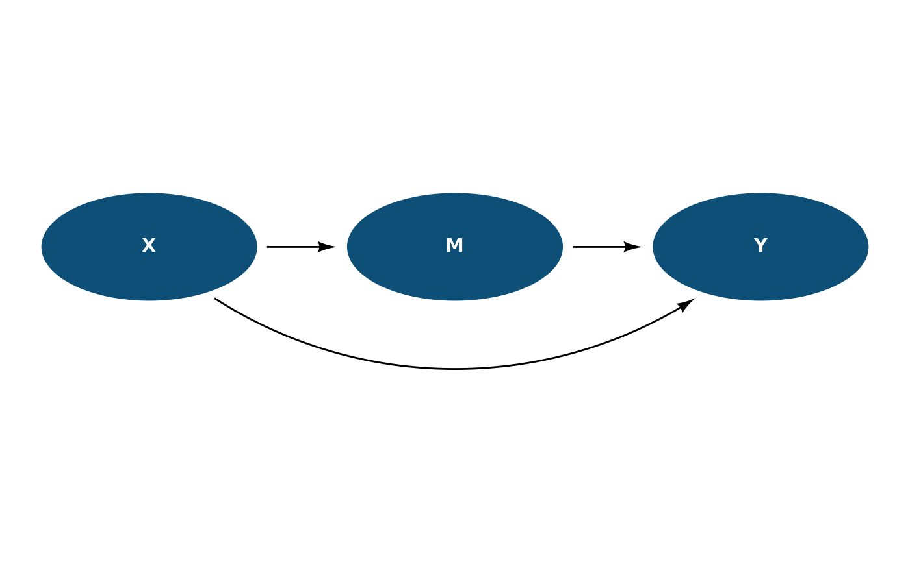

Takes multiple dag_edge() specifications and builds all connections in
one call. Shared styling (e.g., resect, color) is specified once;
per-edge overrides in each dag_edge() take precedence.
Arguments
- ...
One or more
dag_edge()specifications.- resect
Amount to pull back arrows from node boundaries. Defaults to
2.- color
Arrow color. Defaults to
"black".- alpha
Arrow opacity. Defaults to
1.
Value
A list of connection objects, suitable for adding to a
ggdiagram() plot with +.
Details
Returns a plain list() of connection objects, which ggplot2's +
operator handles natively (iterating over each element).
Examples
library(daggr)
X <- dag_ellipse("X")
M <- dag_ellipse("M") |> place(from = X, where = "right", sep = 2.5)
Y <- dag_ellipse("Y") |> place(from = M, where = "right", sep = 2.5)
ggdiagram() +
X + M + Y +
dag_edges(
dag_edge(X, M),
dag_edge(M, Y),
dag_edge(X, Y, arc_bend = 0.4)
) +
theme_dag()
